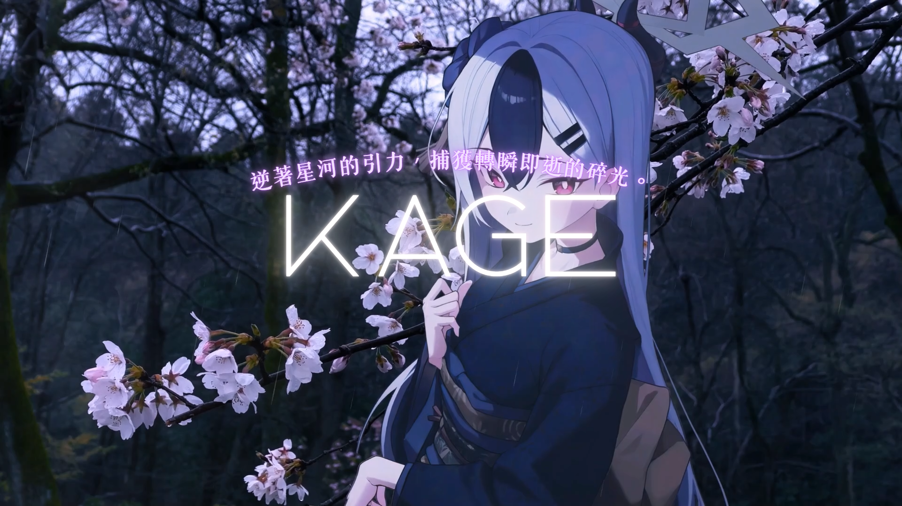

GAME INFORMATION
遊戲介紹

01
純色版太鼓玩法
為追求極簡體感，故改為純白色音符，你可以使用D、F、J、K來遊玩遊戲。
02
個人排行榜
具備記錄成績功能，努力突破自己的個人紀錄。
03
可自製譜面
依照map.js的寫法去自己製作譜面，可以讓你的遊戲有更多趣味。

為追求極簡體感，故改為純白色音符，你可以使用D、F、J、K來遊玩遊戲。
具備記錄成績功能，努力突破自己的個人紀錄。
依照map.js的寫法去自己製作譜面，可以讓你的遊戲有更多趣味。